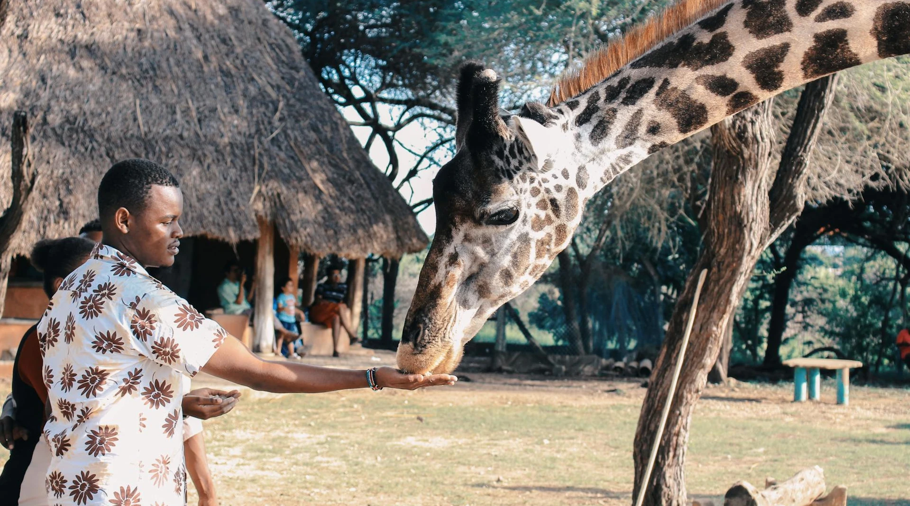
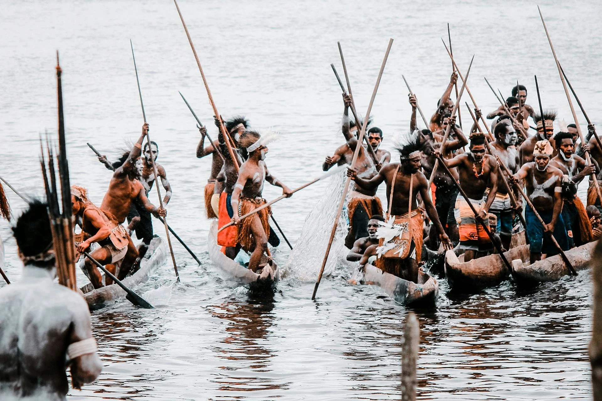
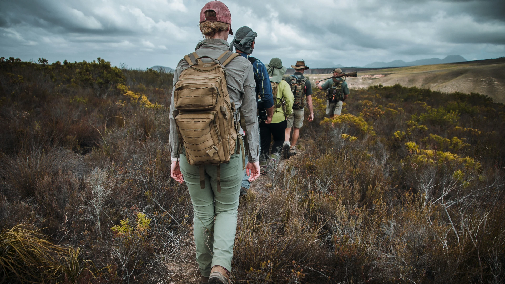

AFRITRIP
¿Buscas realizar una aventura llena de emociones?
¿Conocer culturas casi desconocidas?
¿Estar en contacto con majestuosos animales?
¡No dudes más y da rienda suelta a tu vena aventurera!
ÁFRICA
Un continente lleno de magia y misterio, te invita a explorar su diversidad única. Desde las vastas extensiones de sus paisajes naturales hasta la riqueza de sus culturas ancestrales, cada rincón ofrece una experiencia inolvidable. Ya sea que te atraigan las impresionantes vistas, el encuentro con tribus tradicionales o la emoción de un safari en la naturaleza, África tiene algo para todos. Un viaje por África no es solo una aventura, es una inmersión en la esencia misma del continente. ¡Descubre África y déjate sorprender!
FAUNA
África es un continente conocido por su riqueza en biodiversidad y hogar de algunas de las especies más emblemáticas del mundo. Entre ellas destacan el león, el elefante africano, el rinoceronte y el búfalo africano, cuatro de los famosos "Cuatro Grandes". Estos animales no solo simbolizan la grandeza de la fauna africana, sino que también atraen a millones de personas interesadas en admirarlos en su entorno natural. Explorar la vida salvaje africana permite disfrutar de la majestuosidad de estos animales y experimentar una conexión única con la naturaleza. Observarlos en su hábitat, interactuando y viviendo en libertad, es una experiencia incomparable que resalta la importancia de preservar estos ecosistemas únicos. África ofrece la oportunidad de sumergirse en un mundo donde la vida silvestre y la naturaleza se entrelazan de manera asombrosa, mostrando la belleza y fragilidad de su biodiversidad.
Búfalo
Un herbívoro corpulento y social, famoso por su carácter impredecible y por formar grandes manadas que cooperan para defenderse de los depredadores.
Su comportamiento cooperativo incluye "votaciones". Antes de moverse, las hembras de una manada se levantan y miran en la dirección en la que prefieren ir, decidiendo colectivamente su próximo destino.
Elefante
El mamífero terrestre más grande del mundo, reconocido por su inteligencia, memoria y sus características orejas grandes en forma de mapa de África.
Sus colmillos están compuestos de marfil y crecen durante toda su vida. Además, pueden usar su trompa, con más de 40,000 músculos, para realizar tareas delicadas como pelar frutas.
León
Conocido como el "rey de la selva", es un depredador social que vive en manadas, destacando por su fuerza y liderazgo. Su rugido, audible a kilómetros, simboliza pode.
Los leones machos suelen tener una melena cuyo tamaño y color son indicadores de su salud y nivel de testosterona. Cuanto más oscura la melena, mayor es su atractivo para las hembras.
Rinoceronte
Animal robusto con un cuerpo protegido por una gruesa piel y característico por uno o dos cuernos, siendo un emblema de resistencia, aunque amenazado por la caza furtiva.
A pesar de su peso y tamaño, los rinocerontes pueden alcanzar velocidades de hasta 55 km/h, mostrando una sorprendente agilidad al correr.
Búfalo
Un herbívoro corpulento y social, famoso por su carácter impredecible y por formar grandes manadas que cooperan para defenderse de los depredadores.
Su comportamiento cooperativo incluye "votaciones". Antes de moverse, las hembras de una manada se levantan y miran en la dirección en la que prefieren ir, decidiendo colectivamente su próximo destino.
Elefante
El mamífero terrestre más grande del mundo, reconocido por su inteligencia, memoria y sus características orejas grandes en forma de mapa de África.
Sus colmillos están compuestos de marfil y crecen durante toda su vida. Además, pueden usar su trompa, con más de 40,000 músculos, para realizar tareas delicadas como pelar frutas.
León
Conocido como el "rey de la selva", es un depredador social que vive en manadas, destacando por su fuerza y liderazgo. Su rugido, audible a kilómetros, simboliza pode.
Los leones machos suelen tener una melena cuyo tamaño y color son indicadores de su salud y nivel de testosterona. Cuanto más oscura la melena, mayor es su atractivo para las hembras.
Rinoceronte
Animal robusto con un cuerpo protegido por una gruesa piel y característico por uno o dos cuernos, siendo un emblema de resistencia, aunque amenazado por la caza furtiva.
A pesar de su peso y tamaño, los rinocerontes pueden alcanzar velocidades de hasta 55 km/h, mostrando una sorprendente agilidad al correr.
TRIBUS
África, conocida como la cuna de la humanidad, es un continente rico en diversidad cultural y etnográfica. Hogar de miles de tribus, cada una con sus propias lenguas, costumbres y tradiciones, estas comunidades representan un mosaico vibrante de la historia y la identidad africanas. Desde los desiertos del Sahara hasta las selvas tropicales del Congo, las tribus africanas han desarrollado formas únicas de vida profundamente conectadas con su entorno, transmitiendo conocimientos ancestrales de generación en generación. Más allá de sus prácticas cotidianas, las tribus africanas destacan por sus rituales, ceremonias y arte, que reflejan una relación íntima con la naturaleza, los ancestros y lo espiritual. A pesar de los desafíos de la modernidad y la globalización, estas comunidades continúan siendo guardianas de un patrimonio cultural invaluable, ofreciendo al mundo una visión de lo que significa vivir en armonía con las tradiciones y el entorno.
Diversidad lingüística y cultural
Las tribus africanas reflejan una asombrosa diversidad lingüística y cultural. Con más de 2,000 idiomas hablados en el continente, cada comunidad posee su propio sistema de comunicación y expresiones culturales. Estas lenguas van acompañadas de tradiciones únicas que incluyen música, danzas, vestimentas y formas de narrar historias, convirtiéndose en pilares de identidad y cohesión social.
Conexión espiritual y rituales ancestrales
La espiritualidad juega un papel central en la vida de las tribus africanas. Muchas de ellas veneran a los ancestros como guías protectores y participan en rituales que fortalecen la conexión entre el mundo físico y espiritual. Estas ceremonias, a menudo acompañadas de música y danzas tradicionales, son fundamentales para marcar hitos como nacimientos, matrimonios o cambios de estación.

Adaptación al entorno natural
Cada tribu ha desarrollado formas de vida que se adaptan a su entorno geográfico. Desde los pastores nómadas que recorren los desiertos y sabanas, hasta las comunidades agrícolas que aprovechan las fértiles tierras tropicales, las tribus africanas destacan por su ingenio y sostenibilidad en el uso de los recursos naturales. Esta simbiosis con la naturaleza asegura su supervivencia y preserva los ecosistemas locales.
Arte y símbolos como formas de expresión
El arte tribal africano es mucho más que estética; es una forma de comunicación llena de simbolismo. Máscaras, esculturas, tejidos y pinturas corporales son utilizados no solo para expresar belleza, sino también para transmitir historias, valores y creencias. Cada pieza cuenta con un significado profundo, relacionado con la identidad de la tribu y su percepción del mundo.
Diversidad lingüística y cultural
Las tribus africanas reflejan una asombrosa diversidad lingüística y cultural. Con más de 2,000 idiomas hablados en el continente, cada comunidad posee su propio sistema de comunicación y expresiones culturales. Estas lenguas van acompañadas de tradiciones únicas que incluyen música, danzas, vestimentas y formas de narrar historias, convirtiéndose en pilares de identidad y cohesión social.
Conexión espiritual y rituales ancestrales
La espiritualidad juega un papel central en la vida de las tribus africanas. Muchas de ellas veneran a los ancestros como guías protectores y participan en rituales que fortalecen la conexión entre el mundo físico y espiritual. Estas ceremonias, a menudo acompañadas de música y danzas tradicionales, son fundamentales para marcar hitos como nacimientos, matrimonios o cambios de estación.
Adaptación al entorno natural
Cada tribu ha desarrollado formas de vida que se adaptan a su entorno geográfico. Desde los pastores nómadas que recorren los desiertos y sabanas, hasta las comunidades agrícolas que aprovechan las fértiles tierras tropicales, las tribus africanas destacan por su ingenio y sostenibilidad en el uso de los recursos naturales. Esta simbiosis con la naturaleza asegura su supervivencia y preserva los ecosistemas locales.
Arte y símbolos como formas de expresión
El arte tribal africano es mucho más que estética; es una forma de comunicación llena de simbolismo. Máscaras, esculturas, tejidos y pinturas corporales son utilizados no solo para expresar belleza, sino también para transmitir historias, valores y creencias. Cada pieza cuenta con un significado profundo, relacionado con la identidad de la tribu y su percepción del mundo.
SAFARIS
África es una tierra de contrastes, hogar de paisajes impresionantes y una riqueza natural incomparable. En nuestros safaris, tendrás la oportunidad de vivir momentos únicos rodeado de fauna salvaje, cielos infinitos y la auténtica magia de la naturaleza. Diseñamos experiencias para que cada viajero encuentre su conexión con el corazón de África, ya sea caminando por senderos, navegando en tranquilas aguas o recorriendo majestuosas llanuras. Descubre nuestros tipos de safari y prepárate para una aventura inolvidable.

Safari a pie
Para los que buscan una experiencia auténtica y cercana, el safari a pie ofrece una forma única de explorar África. Acompañado por guías expertos, caminarás por senderos naturales en parques como Mana Pools o el Serengeti, descubriendo detalles que a menudo pasan desapercibidos. Podrás observar la flora, rastrear huellas y escuchar el canto de aves exóticas, todo mientras sientes la tierra bajo tus pies y la naturaleza vibrando a tu alrededor.
Safari en coche
El clásico safari en coche combina comodidad y emoción, permitiéndote recorrer las emblemáticas sabanas africanas en busca de los “Cinco Grandes”. A bordo de vehículos todo terreno, viajarás a través del Parque Nacional Kruger, el Masái Mara o el Serengeti, acercándote a leones, elefantes, jirafas y mucho más. Nuestros guías se asegurarán de que no te pierdas ni un instante de la acción mientras te sumerges en la grandeza de la vida salvaje africana.
Safari en barca
El safari en barca es perfecto para los amantes del agua y la tranquilidad. Navega por el delta del Okavango en Botsuana o los canales del río Zambezi, rodeado de hipopótamos, cocodrilos y aves de colores vibrantes. A bordo de una barca tradicional o moderna, disfrutarás de vistas únicas mientras los reflejos del sol iluminan los paisajes acuáticos. Este tipo de safari te muestra África desde una perspectiva diferente, ideal para los que buscan serenidad y asombro.
Safari a pie
Para los que buscan una experiencia auténtica y cercana, el safari a pie ofrece una forma única de explorar África. Acompañado por guías expertos, caminarás por senderos naturales en parques como Mana Pools o el Serengeti, descubriendo detalles que a menudo pasan desapercibidos. Podrás observar la flora, rastrear huellas y escuchar el canto de aves exóticas, todo mientras sientes la tierra bajo tus pies y la naturaleza vibrando a tu alrededor.
Safari en coche
El clásico safari en coche combina comodidad y emoción, permitiéndote recorrer las emblemáticas sabanas africanas en busca de los “Cinco Grandes”. A bordo de vehículos todo terreno, viajarás a través del Parque Nacional Kruger, el Masái Mara o el Serengeti, acercándote a leones, elefantes, jirafas y mucho más. Nuestros guías se asegurarán de que no te pierdas ni un instante de la acción mientras te sumerges en la grandeza de la vida salvaje africana.
Safari en barca
El safari en barca es perfecto para los amantes del agua y la tranquilidad. Navega por el delta del Okavango en Botsuana o los canales del río Zambezi, rodeado de hipopótamos, cocodrilos y aves de colores vibrantes. A bordo de una barca tradicional o moderna, disfrutarás de vistas únicas mientras los reflejos del sol iluminan los paisajes acuáticos. Este tipo de safari te muestra África desde una perspectiva diferente, ideal para los que buscan serenidad y asombro.
VIAJES
El África que siempre soñaste te espera, ya sea en la cima de sus montañas, en las profundidades de sus ríos o en el corazón de su cultura.
¡Elige tu camino y embárcate en la aventura de tu vida!
| Nombre | Lugar | Precio | Hotel | Personas |
|---|---|---|---|---|
| Explorador | Sabanas | 950€ | No Inc | 1 pax |
| Montañero | Kilimanjaro | 1200€ | No Inc | 1 pax |
| Descubridor | Namibia | 6300€ | 6d/7n | 2 pax |
| Navegante | Delta del Okavango | 5500€ | 5d/6n | 2 pax |
| Fotógrafo | Sahara | 9300€ | 10d/11n | 2 pax |